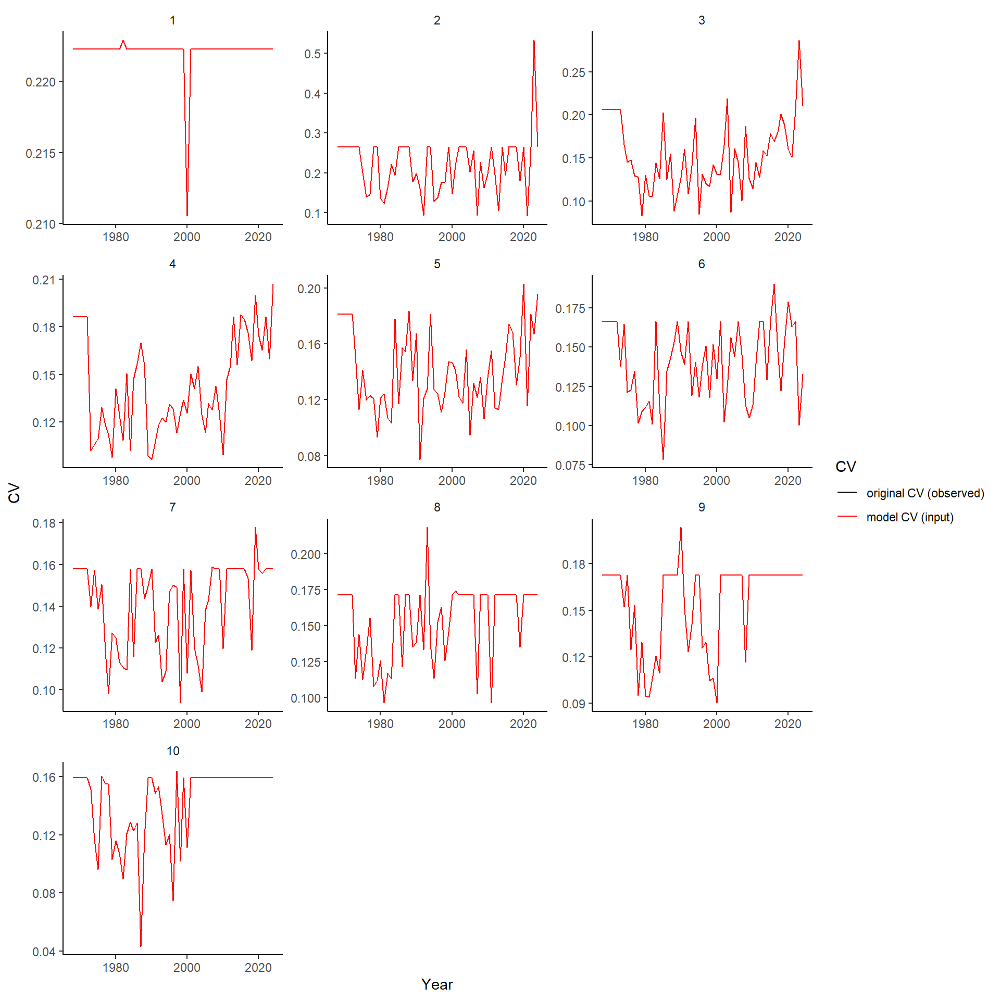

Start
2024-12-17
1 SET-UP
source('../../0.0_settings.R')
this.year <- 20242 Input data
2.1 Read
new <- T
if(new){
bio <- get.bio(species='maquereau',user=imlp.user,password=imlp.pass)
save(bio,file=paste0('../../Rdata/bio_',Sys.Date(),'.Rdata'))
}else{
df <- file.info(list.files("../../Rdata/", full.names = T,pattern="bio_"))
load(rownames(df)[which.max(df$mtime)])
}
2.2 Subsetting and outlier removal
Could do outlier removal better.
# subset
bio.waa <- bio[!is.na(bio$weight) &
!is.na(bio$agef) &
bio$agef>0 &
bio$agef<21,
c('year','month','date','gear','nafo','weight','agef','sample.id','length.frozen')]
names(bio.waa)[7] <- 'age'
names(bio.waa)[9] <- 'length'
# remove outliers (see plot)
bio.waa$outlier <- FALSE
bio.waa$outlier <- ifelse(bio.waa$weight<0.03,TRUE,bio.waa$outlier) # less than 30gr
bio.waa$outlier <- ifelse(bio.waa$age>17,TRUE,bio.waa$outlier) # at least 4 out of 6 age 18 have wrong length AND weight
bio.waa[!bio.waa$outlier,] <- ddply(bio.waa[!bio.waa$outlier,],c('age'),transform,
outlier=ifelse((weight<=quantile(weight,0.0001)|weight>=quantile(weight,0.9999)),TRUE,outlier)) # quick and dirty way to remove extremes
# cleaning
bio.waa$age.group <- ifelse(bio.waa$age < 10, bio.waa$age, 10)
bio.waa$length <- roundFish(bio.waa$length*100,0.5) # round to half centimeters2.3 plots
2.3.1 age vs weight
ggplot(bio.waa,aes(x=age,y=weight,col=outlier))+
geom_point()
3 Calculations
3.1 Try different options
Even trial run with different selectivity gears (despite not a great idea).
bio.waa <- bio.waa[!bio.waa$outlier,]
bio.waa$outlier <- NULL
# 4T + gillnets + june/july
df1 <- bio.waa[bio.waa$month %in% c(6,7) &
bio.waa$nafo %in% c('4T') &
bio.waa$gear %in% c("GND", "GNS", "GN"),]
waa1 <- get.waa(df1$year,df1$age.group,df1$weight,df1$sample.id)
waa1$option <- '4T_gill_JunJul'
# 4TVWX + gillnets + june/july
df2 <- bio.waa[bio.waa$month %in% c(6,7) &
bio.waa$nafo %in% c('4T', "4V", "4W", "4X") &
bio.waa$gear %in% c("GND", "GNS", "GN"),]
waa2 <- get.waa(df2$year,df2$age.group,df2$weight,df2$sample.id)
waa2$option <- '4TVWX_gill_JunJul'
# 4T + gillnets/line+jig + june/july
df3 <- bio.waa[bio.waa$month %in% c(6,7) &
bio.waa$nafo %in% c('4T') &
bio.waa$gear %in% c("GND", "GNS", "GN","LHM","LMP","LX","LHP"),]
waa3 <- get.waa(df3$year,df3$age.group,df3$weight,df3$sample.id)
waa3$option <- '4T_gillhandjig_JunJul'
# 4Tvwx + gillnets/line+jig + june/july
df4 <- bio.waa[bio.waa$month %in% c(6,7) &
bio.waa$nafo %in% c('4T', "4V", "4W", "4X") &
bio.waa$gear %in% c("GND", "GNS", "GN","LHM","LMP","LX","LHP"),]
waa4 <- get.waa(df4$year,df4$age.group,df4$weight,df4$sample.id)
waa4$option <- '4TVWX_gillhandjig_JunJul'3.2 Select option
Going with 4TVWX + gillnets + june/july
thisbio <- df2
thiswaa <- waa2 3.3 plots
3.3.1 waa
waa.comp <- rbind(waa1,waa2,waa3,waa4)
ggplot(waa.comp, aes(x=year, y=w, col=as.factor(age))) +
geom_line(linewidth=1) +
facet_wrap(~option)+
labs(x='Year',y='Weigt (kg)',col='Age')+
theme_minimal(base_size = 14) 
3.3.2 number of fish
ggplot(waa.comp, aes(x=year, y=age)) +
geom_tile(aes(fill=n)) +
geom_text(data=waa.comp[waa.comp$n<10,],aes(label=n))+
facet_wrap(~option)+
labs(x='Year',y='Age',fill='n')+
theme_minimal(base_size = 14)+
scale_fill_viridis_c(direction = -1)+
scale_x_continuous(expand=c(0,0))
3.3.3 number of samples
ggplot(waa.comp, aes(x=year, y=age)) +
geom_tile(aes(fill=N)) +
geom_text(data=waa.comp[waa.comp$N<5,],aes(label=N))+
facet_wrap(~option)+
labs(x='Year',y='Age',fill='N')+
theme_minimal(base_size = 14)+
scale_fill_viridis_c(direction = -1)+
scale_x_continuous(expand=c(0,0))
4 How many fish do we minimally need?
4.1 Simulation
newm <- T
if(!newm){
df <- file.info(list.files("../../Rdata/", full.names = T,pattern="sims_"))
load(rownames(df)[which.max(df$mtime)])
}else{
waa.tot <- ddply(thisbio,c('age.group'),summarise,w=mean(weight),wsd=sd(weight),n=length(weight))
re <- function(test,true) (test-true)/true
sims <- ldply(1:1000,function(i){
ldply(unique(thisbio$age.group),function(a){
ldply(1:100,function(f){
# sample from all ages (across all years to have enough to sample from; might not be the case for age 1)
d <- thisbio[thisbio$age.group==a & !is.na(thisbio$age.group),]
# Sample 1 to 100 fish weights for each step
ws <- sample(d$weight, f, replace = TRUE)
# Calculate mean weight of fish sampled
wav <- mean(ws)
# Estimate relative error
RE <- re(wav,waa.tot[waa.tot$age.group==a,'w'])
return(c(sim=i,age=a,n=f,RE=RE))
})
})
})
save(sims,file=paste0('../../Rdata/sims_',Sys.Date(),'.Rdata'))
}
check <- ddply(sims,c('age','n'),summarise,mean=mean(RE),low=mean(RE)-1.96*sd(RE),high=mean(RE)+1.96*sd(RE))
pd <- position_dodge(0.1)
plots <- lapply(unique(check$age),function(x){
ggplot(check[check$age==x,], aes(x = n, y = mean)) +
geom_line(size = 1.5) +
geom_errorbar(size = 0.5, aes(ymin=low, ymax=high), width=1.5, position=pd) +
geom_line(position=pd, size=1) +
geom_point(position=pd, size=1) +
geom_hline(yintercept=0.1, linetype="dashed", color = "red") +
geom_hline(yintercept=-0.1, linetype="dashed", color = "red") +
theme_minimal(base_size = 14) +
ylab("Relative error with 95%CI") +
xlab("Number of fish sampled") +
scale_x_continuous(breaks = seq(0,100,5)) +
ggtitle(paste("Age", x, sep = " "))
})
## Warning: Using `size` aesthetic for lines was deprecated in ggplot2 3.4.0.
## ℹ Please use `linewidth` instead.
## This warning is displayed once every 8 hours.
## Call `lifecycle::last_lifecycle_warnings()` to see where this warning was generated.
#Remove year-age group that contain less than 10 fish 4.2 plots
Note that this is an easy way to determine error in function of the number of fish measured. It might be overestimated because the true distribution of values (weights) is lower than assumed here (by grouping all years).
4.2.1 age1
plots[[1]]
## Warning: `position_dodge()` requires non-overlapping x intervals.
4.2.2 age2
plots[[2]]
## Warning: `position_dodge()` requires non-overlapping x intervals.
4.2.3 age3
plots[[3]]
## Warning: `position_dodge()` requires non-overlapping x intervals.
4.2.4 age4
plots[[4]]
## Warning: `position_dodge()` requires non-overlapping x intervals.
4.2.5 age5
plots[[5]]
## Warning: `position_dodge()` requires non-overlapping x intervals.
4.2.6 age6
plots[[6]]
## Warning: `position_dodge()` requires non-overlapping x intervals.
4.2.7 age7
plots[[7]]
## Warning: `position_dodge()` requires non-overlapping x intervals.
4.2.8 age8
plots[[8]]
## Warning: `position_dodge()` requires non-overlapping x intervals.
4.2.9 age9
plots[[9]]
## Warning: `position_dodge()` requires non-overlapping x intervals.
4.2.10 age10
plots[[10]]
## Warning: `position_dodge()` requires non-overlapping x intervals.
5 What is the effect of working with subsample data?
Scale by catch length-frequencies.
5.1 Read
newf <- FALSE
if(newf){
lf <- get.lf(species='maquereau',user="pec_iml_ro",password="Pecimlro_1!")
save(lf,file=paste0('../../Rdata/lf_',Sys.Date(),'.Rdata'))
}else{
df <- file.info(list.files("../../Rdata/", full.names = T,pattern="lf_"))
load(rownames(df)[which.max(df$mtime)])
}
5.2 Proportions
props <- lf[!is.na(lf$length) &
lf$month %in% unique(thisbio$month) &
lf$nafo %in% unique(thisbio$nafo) &
lf$gear %in% unique(thisbio$gear),]
props <- ddply(props,c('year','length'),summarise,n=length(length))
props <- ddply(props,c('year'),transform,prop=n/sum(n))
props$length <- roundFish(props$length*100,0.5)
propsall <- expand.grid(year=unique(thisbio$year),length=seq(min(thisbio$length,na.rm=TRUE),max(thisbio$length,na.rm=TRUE),by=0.5))
propsall <- merge(propsall,props,all.x=TRUE)
propsall <- ddply(propsall,c('year'),transform,prop=zoo::na.locf(zoo::na.locf(prop,na.rm = FALSE), fromLast = TRUE)) # not great, but little impact
thisbiolf <- merge(thisbio,propsall,all.x=TRUE)
thisbiolf[is.na(thisbiolf$prop),'prop'] <- max(thisbiolf$prop,na.rm = T) # not great, but nearly all for same year so no impact
waa5 <- ddply(thisbiolf,c('year','age.group'),summarise,
w=weighted.mean(weight,prop,na.rm=T),
wsd=NA, # see Hmish package
n=length(weight),
N=length(unique(sample.id)))
waa5$option <- 'with lf'
names(waa5)[2] <- 'age'5.3 plots
5.3.1 comparison pairwase
waa.comp2 <- rbind(thiswaa,waa5)
ggplot(waa.comp2, aes(x=year, y=w, col=as.factor(age))) +
geom_line(size=0.5) +
facet_wrap(~option)+
labs(x='Year',y='Weigt (kg)',col='Age')+
theme_minimal(base_size = 14) 
5.3.2 comparison by age
ggplot(waa.comp2, aes(x=year, y=w, col=option)) +
geom_line(size=0.5) +
facet_wrap(~age,scale='free_y')+
labs(x='Year',y='Weigt (kg)',col='Age')+
theme_minimal(base_size = 14) 
5.3.3 length props (facets)
ggplot(propsall,aes(x=length,y=prop))+
geom_line(size=0.5)+
facet_wrap(year~.)
## Warning: Removed 475 rows containing missing values or values outside the scale range (`geom_line()`).
5.3.4 length props (superposed)
ggplot(propsall,aes(x=length,y=prop,col=year,group=year))+
geom_line(size=0.5)
## Warning: Removed 475 rows containing missing values or values outside the scale range (`geom_line()`).
6 What if I would have used a model?
Not included. Could predict waa (and impute missing values) based on model predictions. However, need interactions (year*gear), nonlinear effects (year), etc. On a dataframe with millions of lines it is extremely slow. Appears overly complex and not very practical.
Test code removed.
7 Fill and smooth
Fit Noel Cadigan’s state-space model for waa. 1) filter out noise. 2) fill in gaps.
Fits an AR1 process in 3 directions (age, year, cohort). Available in catchR package.
7.1 fit model
waam <- thiswaa[thiswaa$n>=10,]
waam$cv <- with(waam,wsd/w)
all <- expand.grid(year=1968:this.year, age=min(waam$age):max(waam$age))
waam <- merge(all, waam, all.x = TRUE)
waa.fit <- armatrix.fit(year=waam$year,age=waam$age,x=waam$w,cv=waam$cv,shrink.cv = 0)
## Warning in armatrix.fit(year = waam$year, age = waam$age, x = waam$w, cv = waam$cv, : cvs equal to 0/NA replaced by value of historic 95% quantile
waa.fit # convergence ok
save(waa.fit,file=paste0("../../Rdata/fit.armatrix/",this.year,"base_cv1shrink0.Rdata"))7.2 plots
7.2.1 waa
p<- armatrix.waa(waa.fit)+scale_color_viridis_d()+scale_y_continuous(limits=c(0,0.9),expand=c(0,0))
p + labs(x="Année | Year", y= "Poids | Weight (kg)", col="Âge | Age")7.2.2 Predicted obs
p<- armatrix.predobs(waa.fit,scale='free',ncol=4)
p+ ggtitle("Prédit vs Observé | Predicted vs Observed") +labs(x="Année | Year", y="Poids à l'âge | Weight-at-age (kg)")
## Warning: Removed 234 rows containing missing values or values outside the scale range (`geom_point()`).7.2.3 Predicted
armatrix.pred(waa.fit,scale='free',ncol=3)7.2.4 Resid bubble
armatrix.res(waa.fit)
## Warning: Removed 234 rows containing missing values or values outside the scale range (`geom_point()`).7.2.5 Resid dot
d <- waa.fit$output
d$cohort <- with(d, year - age)
p1 <- ggplot(d, aes(x = year, y = res)) + geom_text(aes(label = age),
size = 2) + geom_hline(yintercept = 0, linetype = "dashed") +
labs(y = "", x = "Année | Year") + geom_smooth()
p2 <- ggplot(d, aes(x = cohort, y = res)) + geom_point(size = 1) +
geom_hline(yintercept = 0, linetype = "dashed") + labs(y = "",
x = "Cohorte | Cohort") + geom_smooth()
p3 <- ggplot(d, aes(x = age, y = res)) + geom_point(size = 1) +
geom_hline(yintercept = 0, linetype = "dashed") + labs(y = "",
x = "Âge | Age")
p4 <- ggplot(d, aes(x = pred_exp, y = res)) + geom_point(size = 1) +
geom_hline(yintercept = 0, linetype = "dashed") + labs(y = "",
x = "Prédites | Predicted")
grid.arrange(p1 , p2, p3, p4, ncol = 2, left = "Résidus standardisés | Standardized residuals")
## Warning: Removed 234 rows containing non-finite outside the scale range (`stat_smooth()`).
## Warning: Removed 234 rows containing missing values or values outside the scale range (`geom_text()`).
## Warning: Removed 234 rows containing non-finite outside the scale range (`stat_smooth()`).
## Warning: Removed 234 rows containing missing values or values outside the scale range (`geom_point()`).
## Removed 234 rows containing missing values or values outside the scale range (`geom_point()`).
## Removed 234 rows containing missing values or values outside the scale range (`geom_point()`).7.2.6 effects
armatrix.effects(waa.fit) # empty plot because of ggplotGrob function within (used to align plots)7.2.7 cvs
armatrix.cvs(waa.fit,scale='free',ncol=3)
## Warning: Removed 38 rows containing missing values or values outside the scale range (`geom_line()`). # Save results
waaf <- waa.fit$output
waaf <- waaf[,c(1:2,9)]
names(waaf)[3] <- 'weight'
s <- dcast(waaf,year~age,value.var = 'weight')
s[,2:ncol(s)] <- round(s[,2:ncol(s)] ,3)
write.csv(s, file=paste0('../../csv/waa_',this.year,'_base_cv1shrink0.csv'),row.names = FALSE)
p <- armatrix.waa(waa.fit,ylab='Weight (kg)')+scale_color_viridis_d()
ggsave(filename = paste0('../../img/waa',this.year,'.png'),plot = p,units = 'cm',height = 8,width = 14)